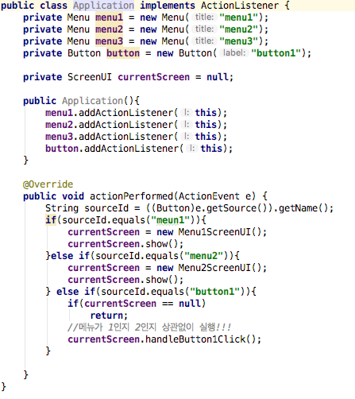
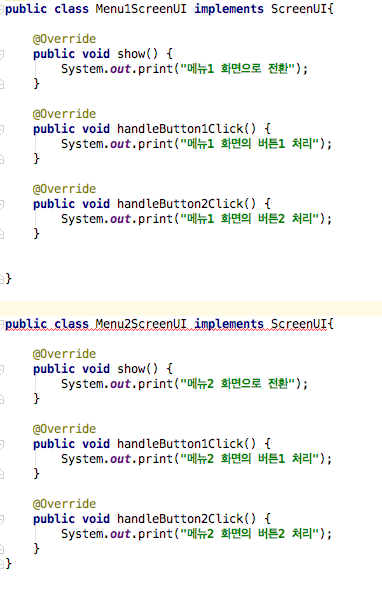
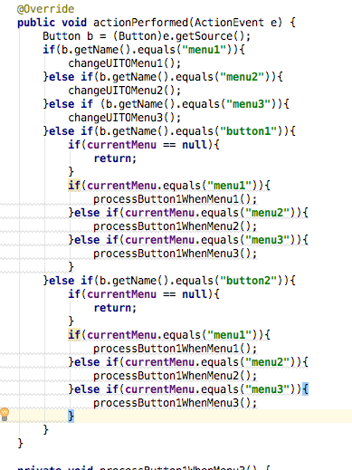
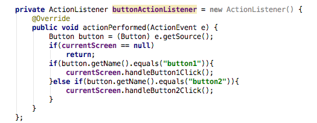

챕터 00 들어가기에는 총 3가지 파트가 있다
1은 지저분해지는 코드
2은 수정하기 좋은 구조를 가진 코드
3은 소프트웨어의 가치다
나는 이 장을 보면서 왜 디자인 패턴이 중요한지 왜 코드를 객체지향적으로 만들어야하는 약간의 중요성을 느끼게 된다.
1 지저분해지는 코드
회사에 들어가면 외부고객이나 내부 고객에게 다음과 같은 말을 들을수 있다고 한다
처음에는 빠르게 요구 사항을 반영해 주었는데 시간이 지날수록 간단한 요구 사항 조차도 제때 계발이 안된다.
혹은 겉보기엔 간단하지만 변경해야 할 곳이 너무 많다 게다가 어딜 변경해야 할지도 다 알수 없어서 변경 이우에 어떤 기능에 문제가 생길지 모른다.
이러한 이유가 생기는 이유는 소프트웨어의 설계가 엉망일때 발생하는 전형적인 증상이다 다음과 같은 예를 보자
위에 코드는 간단하게 메뉴 버튼 2개와 그 메뉴의 내부 버튼이다 이버튼에서 이벤트가 발생하면 if else문으로 누가 이벤트를 발생시켰는지 확인하고 실행하는 코드이다.
이코드의 매우 큰 문제는 기능이 추가되면 그만큼 if else 문이 매우 늘어난다는 것이다.
if else 가 커지다 보면 자연스럽게 복 붙여하 블록을 복사하고 일부를 수정하는 방식으로 코드를 작성하게 된다
최초에는 if else블로이 크지 않기 떄문에 이 방법으로 빠르게 구현해 나갈수 있다 하지만 if else문이 점점 커지면 한 개의 매서드가 수백줄 이상으로 빠르게 증가하게 된다.
이렇게 증가한 조건문은 코드를 복잡하게 만들며 개발자가 코드를 추가하거나 수정할 위치를 찾는데 점점 오랜 시간이 걸리고 또한 심한경우에는 코드가 누락하는 경우도 발생
수정하기 좋은 구조를 가진 코드
이제 같은 상황을 객체 지향 방식으로 만들것이다 객체지향의 추상화와 다형성에 대해서 아직 책에서 언급 하지 않았으나 객체 지향에서는 추상화와 다형성을 이용해서 변화되는 부분을 관리한다.
객체지향방식으로 만들기 위해 약간의 설계 먼저 한다. 위에 예같은 경우에는
1. 메뉴가 선택되면 해당 화면을 보여준다.
2. 버튼 1을 클릭하면 선택된 메뉴 화면에서 알맞은 처리를 한다.
이 설계의 의미는 모든 메뉴에 대해 화면을 보여주고 버튼 1을 클릭하면 화면에 반영한다라는 공통된 동작을 취한다 이 공통동작을 표현하기 위해 ScreenUI타입을 정의했다
ScreenUI의 show()메서드는 어떤 메뉴 버튼이 클릭될 때 실행되는 메서드로서, 메뉴에 해당하는 알맞은 화면을 보여주기 위해 사용되고 handleButton1Click()메서드는 버ㅡㄴ1이 눌렸을 떄 실행된다.
실제 화면에서 보이는 구성 요소와 버튼1 클릭을 처리하는 코드가 다르므로 각 메뉴별로 screenUI인터페이스를 구현한 클래스를 작성해 준다.
이렇게 나눈후 어플리케이션을 만들었을경우 아래의 코드로 변함
이 코드를 보면 이제 메뉴가 1이든 2이든 상관없이 똑같은 코드를 실행한다는 것을 볼수있다.
또한 메뉴와 화변 변경후 버튼클릭은 서로 코드의 목적이 다르며 서로 다른 이유로 변경된다. (에를 들어 메뉴 버튼은 화면 전환이지만 버튼은 실행이 목적!!)
이러한 코드는 따로 분리해서 작성하는게 더욱 좋다!
이렇게 할시 두 작업이 따로 되어 더욱 구분하기 쉽고 따로따로 수정하기 더욱 쉬울것이다!!
이제 이 코드를 가지고 한번 요구사항을 추가해 보자 만약에 버튼 2를 추가해 달라는 요청이 들어왔다 치자 수정해 보자.
그럼 우선 버튼2 추가를 위해 인터페이스에 handleButton2Click메서드를 추가하자
그후 handleButton2Click메서드를 추가로 구현해 보자
처음에 작성했던 Application 클래스에 모든 코드를 작성했던 방식과 비교를 해보았을때 앞의 방식은 메뉴1에 댜한 관련 코드를 분석하거나
수정하려면 메뉴 1관련 코드만 있는 경우와 비교해서 apllication소스 코드의 이곳저곳을 더욱 많이 이동해야 한다!!.
이럴경우 메뉴갯수가 증가할수록 점점 불필요하게 시간을 증가시키는 문제를 야기한다!!
전 추가사항 이행
후 추가사항 이행
그림에서 보는것 처럼 이후 추가사항에서 후의 버전으로 단 2줄만 추가한다는 것을 봤을 것!!
구조적으로는 조금 복잡해 졌지만 이후 분리했을때 수정이 매우 용이!! 분리했을떄 얻을수 있는 장점
1. 새로운 메뉴 추가 시, 버튼 처리 코드가 영향을 받지 않음
2. 한 메뉴 고나련 코드가 한 개의 클래스로 모여서 코드 분석/수정이 용이함
3. 서로 다른 메뉴에 대한 처리 코드가 섞여 있지 않아 수정이 용이함.
즉 요구 사항이 봐뀔때 마다 변화를 좀더 수월하게 적용할수 있다는 장점을 얻는다!!
소프트웨어의 가치
소프트웨어의 가치는 사용자가 요구하는 기능을 올바르게 제공하는 데 있다 하지만 이것을 곧 요구하는 기능만 제공하도록 구현하면 된다는 의미는 아님
요구사항은 언제나 변함 따라서 소프트웨어는 변화할 수 있어야 함 이것이 또다른 소프트웨어의 가치
변화 가능한 유연한 구조를 만들어 주는 핵심 기범 중의 하나가 바로 객체 지향이다!!